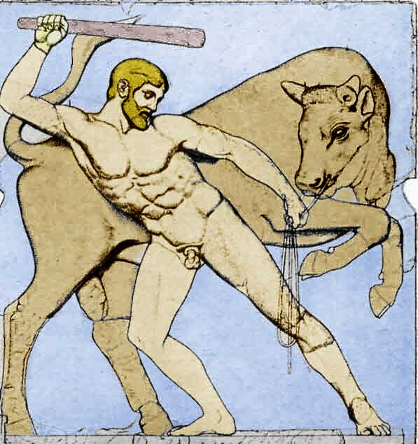

Từ đây trên đất Hy Lạp không còn gì để Eurysthée hành hạ Héraclès nữa. Bao ác thú, bao quái vật, Héraclès đã dẹp trừ xong. Eurysthée phải tìm ra những thử thách khác cho Héraclès. Và lần này vị vua hèn nhát ấy nghĩ tới đảo Crète. Hắn ra lệnh cho Héraclès phải sang đảo Crète bắt sống được con bò mộng hung dữ đang gây nhiều tai họa cho đời sống dân lành đem về Mycènes. Đây là một con bò thần, toàn thân trắng muốt như tuyết in, từ dưới biển hiện lên. Vua Minos, con của nàng Europe đón được con bò này. Nhẽ ra nhà vua phải thực hiện đúng lời cam kết với thần Poséidon, hiến dâng con bò cho thần như đã hứa: “Sẽ hiến dâng thần Poséidon những vật gì hiện lên trên mặt biển...” Nhưng Minos tham tâm, tiếc con bò đẹp liền đánh tráo và chọn một con bò khác cũng đẹp không kém hiến dâng thần. Biết chuyện đổi trắng thay đen này, thần Poséidon nổi giận, làm cho con bò lông trắng như tuyết in ấy hóa điên, mũi phun ra lửa, chạy lung tung làm đàn bò của Minos sợ hãi chạy tan tác. Con bò chạy khắp đảo, giày xéo lên hoa màu, húc đổ nhà cửa, gây thiệt hại cho dân lành không biết bao nhiêu mà kể. Héraclès đến đảo Crète. Chàng đuổi bắt con vật chẳng phải khó khăn gì. Đôi tay của chàng nắm chặt lấy đôi sừng bò, ghìm lại. Thế là nó phải chịu thuần phục. Trị được con bò, Héraclès bèn ngồi lên lưng nó bắt nó vượt biển đưa chàng về Péloponnèse. Và chàng cứ thế cưỡi bò về Mycènes trình diện trước nhà vua. Cũng như những lần trước, Eurysthée lại sợ để con bò thần này trong đàn bò của mình thì có ngày sinh chuyện. Tốt hơn hết là đem hiến dâng nữ thần Héra. Nhưng nữ thần Héra có ý không muốn nhận một tặng phẩm do đứa con riêng của chồng mình (mà nàng vẫn căm ghét) đoạt được bằng chiến công hiển hách của nó. Vì thế, nàng đã thả con bò ra. Con bò được tự do liền chạy một mạch từ đất Argolide qua Corinthe tới sống ở miền đồng bằng Attique. Chính ở nơi đây, sau này, người anh hùng Thésée đã lập một chiến công nối tiếp chiến công của Héraclès, trừ khử con bò ngay trên cánh đồng Marathon để loại trừ một tai họa cho dân lành.
